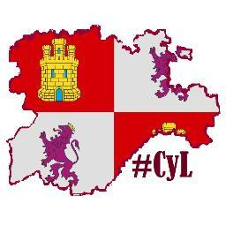

Inicio
Castilla y León es una comunidad autónoma española, referida como comunidad histórica y cultural en su Estatuto de Autonomía. Se constituyó como preautonomía en 1978 y adquirió su estatus de comunidad autónoma en 1983. Su territorio se sitúa en la parte norte de la meseta de la península ibérica y se corresponde mayoritariamente con la parte española de la cuenca hidrográfica del Duero. Está compuesta por nueve provincias: Ávila, Burgos, León, Palencia, Salamanca, Segovia, Soria, Valladolid y Zamora. Es la comunidad autónoma más extensa de España, con una superficie de 94 226 km²,2 y la sexta más poblada, con 2 519 875 habitantes. Ya desde el inicio del debate federalista en España en el siglo XIX durante la Primera República hubo proyectos de autonomía para una región castellana y leonesa, aunque incluyendo también a las actuales Cantabria y La Rioja. El mismo proyecto siguió existiendo durante la Segunda República y finalmente se llevó a cabo tras la Constitución de 1978, pero sin Cantabria y La Rioja que, aunque se consideró incluirlas, finalmente formaron autonomías uniprovinciales. Su Estatuto de Autonomía declara en su preámbulo: La Comunidad Autónoma de Castilla y León surge de la moderna unión de los territorios históricos que componían y dieron nombre a las antiguas coronas de León y Castilla. Hace mil cien años se constituyó el Reino de León, del cual se desgajaron en calidad de reinos a lo largo del siglo XI los condados de Castilla y Galicia y en 1143, el de Portugal. Durante estas dos centurias los monarcas que ostentaron el gobierno de estas tierras alcanzaron la dignidad de emperadores, tal como atestiguan las intitulaciones de Alfonso VI y Alfonso VII. El Estatuto de Autonomía define una serie de valores esenciales y símbolos de los habitantes de Castilla y León, como su patrimonio lingüístico —aludiendo a la lengua castellana y al resto de lenguas habladas en la comunidad: el leonés y el gallego— o su patrimonio histórico, artístico y natural. Entre los símbolos se encuentran el blasón, la bandera, el pendón, el himno —pese a que no existe—, al tiempo que el 23 de abril queda definido como Día de Castilla y León, en conmemoración de la derrota sufrida por los ejércitos de las Comunidades de Villa y Tierra castellanas en Villalar durante la Guerra de las Comunidades, en 1521.  En Castilla y León se encuentra más del 60 % de todo el patrimonio —arquitectónico, artístico, cultural, etc.— existente en España,20 lo que se traduce en: 9 bienes Patrimonio de la Humanidad,21 casi 1800 bienes de interés cultural clasificados, 112 conjuntos históricos, 400 museos, más de 500 castillos, de los cuales 16 son considerados de alto valor histórico, 12 catedrales, 1 concatedral y la mayor concentración de arte románico del mundo. Con 8 bienes culturales Patrimonio de la Humanidad, Castilla y León es la región del mundo con más bienes culturales distinguidos con la máxima figura de protección que otorga la Unesco, por delante de las regiones italianas de la Toscana y de la Lombardía, ambas con 6 bienes. Asimismo, los montes de Valsaín y las sierras de Béjar y Francia, en el sistema Central, los valles de Laciana, Omaña y Luna y los Picos de Europa y Los Ancares, en la cordillera Cantábrica, y la Meseta Ibérica, en la zona fronteriza con Portugal, han sido declarados reserva de la biosfera por la Unesco, la cual también reconoce el geoparque de La Lora con esta figura de protección. Además, Castilla y León está fuertemente relacionada con dos de los registros del Programa Memoria del Mundo de la Unesco como son los Decreta de las Cortes de León de 1188, curia regia considerada cuna del parlamentarismo mundial por la propia institución y el Tratado de Tordesillas. Según datos del Instituto Nacional de Estadística de 2016, su PIB per capita sitúa a Castilla y León en el octavo puesto de España. Según datos del Instituto Nacional de Estadística de 2007, su índice de desarrollo humano (0,965) es el 4.º mayor del país y se encuentra por delante del de países como Francia, Suecia, Países Bajos o Japón. El Índice de desarrollo de los servicios sociales refleja que la comunidad cuenta con uno de los mejores servicios sociales del país, situándose como la tercera autonomía que mejores prestaciones ofrece a sus ciudadanos, por detrás del País Vasco y Navarra. Su educación, según el Informe PISA de 2015, encabeza las puntuaciones en lectura y ciencias con una valoración equiparable a la de los diez mejores países del estudio.
| Provincia | Población | Municipios |
|---|---|---|
| Ávila | 171000 | 248 |
| Burgos | 171000 | 248 |
| León | 171000 | 248 |
| Palencia | 171000 | 248 |
| Salamanca | 171000 | 248 |
| Segovia | 171000 | 248 |
| Soria | 171000 | 248 |
| Valladolid | 171000 | 248 |
| Zamora | 171000 | 248 |